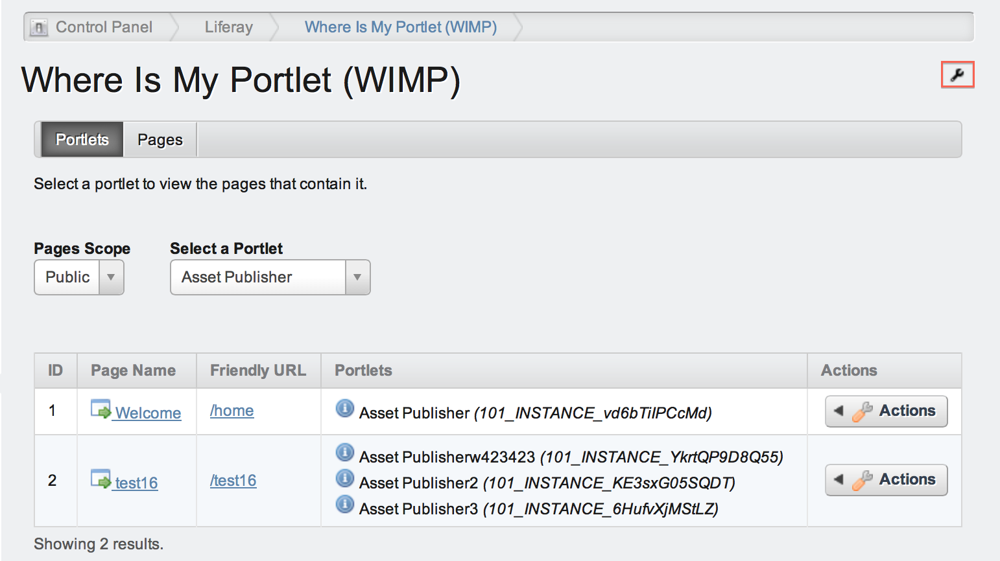
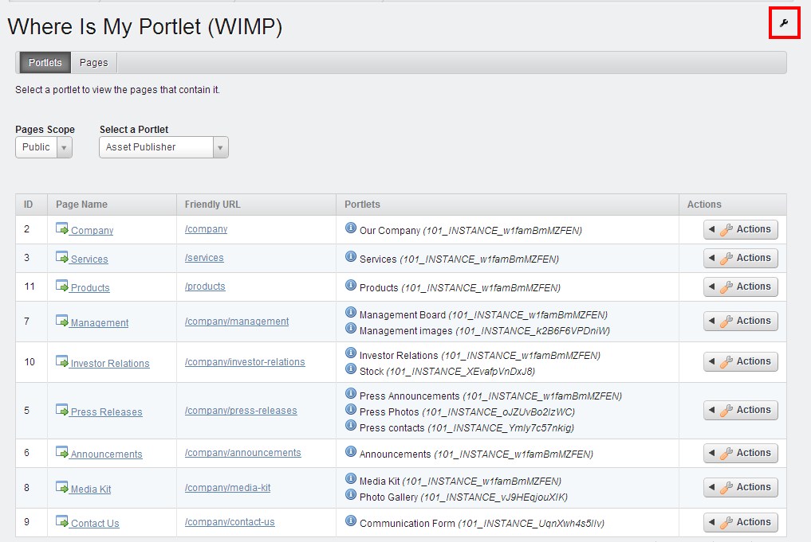
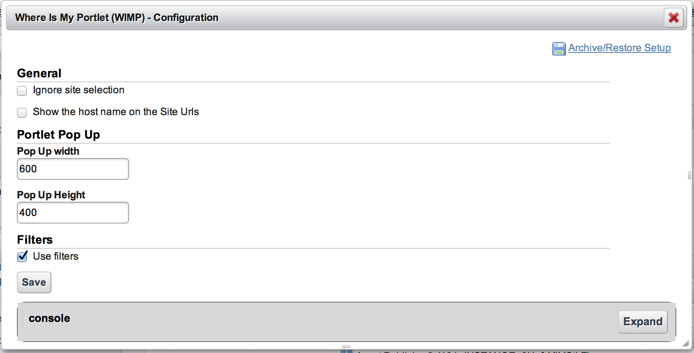
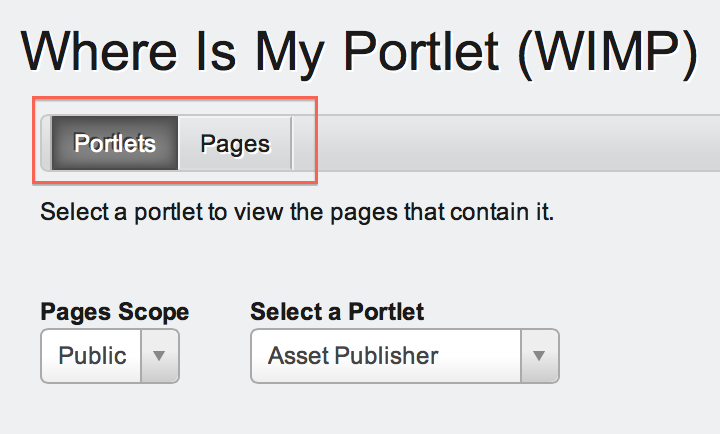
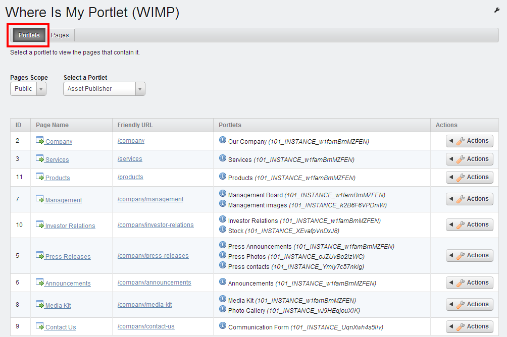
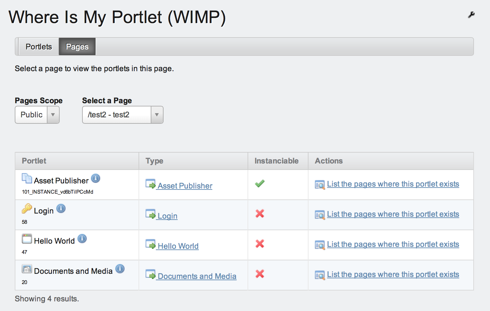

Contents
Short description
About Technopolis
Configuration
General
Portlet Pop Up
Filters
Usage
Portlets tab
Pages tab
Short description
Have you ever had trouble finding which site pages contain a specific portlet? Have you wished to know at a glance all portlets a site page contains?
'Where Is My Portlet' provides the answer!
'Where Is My Portlet' (WIMP) is a Site-section Control Panel utility portlet that offers users a fast and convenient way to discover:
- which site pages contain a specific portlet
- which portlets are contained in a site page
The portlet is designed in a minimalistic way to take advantage of its simplicity, user friendliness and the fact that it aimed for both developers and editors / administrators.

About Technopolis
Technopolis S.A., with its roots at OPEN Services Ltd, is a company devoted into providing Enterprise Application Integration and Web Development services in open source platforms since 1992. After investing in Liferay Portal development and implementation projects since 2006, Technopolis S.A. signed an agreement with Liferay GMBH to become the first Service Partner of LIFERAY Inc. in Greece.
Configuration

After deploying the WIMP portlet , you are ready to use it. Just visit the Control Panel's Content section of the Liferay installation and you'll see the WIMP portlet in the listing. By clicking on its name, you'll see the choices that WIMP offers.
By left clicking on the Configuration button, you have the ability to change the following settings:

General
- Ignore site selection: if the checkbox is selected, the WIMP ignores the selection of the site. Practically, all the portlets of the Liferay installation will be displayed in the Select a Portlet drop-down menu, regardless the selected site.
- Show the host name on the Site Urls: if the checkbox is selected, the host name will be displayed in the site URL.
Portlet Pop Up
- Select the width and height of the window that pops-up containing technical details about a selected portlet.
Filters
- Deselect the checkbox “Use Filters” if you encounter any problems with the jquery plugin that is been used for the filtering of the drop down values.
Click the Save button to store your selections.
Usage
WIMP is in the Site section of the Control Panel. Depending on the site you choose, WIMP will display the corresponding portlets.
By clicking on WIMP's name in the Control Panel listing, you'll see two available choices offered in separate tabs (Portlets, Pages):

Portlets tab

By selecting the Portlets tab, you can find all pages per Site that contain a specific portlet.
- First, select the Pages Scope from the specific drop-down menu. There are two choices: Public or Private.
- In the right drop-down menu, naming Select a Portlet, appears a list of all used portlets for the selected Scope. Select the portlet of your choice and you'll see the list of the pages that contain the selected portlet.
The four columns of the list show the following items:
- ID: the id of the page
- Page Name: the name of the page. By clicking on the name of a page, you can see the portlets that are contained in the selected page.
- Friendly URL: the URL of the page. By clicking on the URL, you can visit the selected page.
- Portlets: it shows the portlets of the page and specifically the name of the portlet and the instance (if it's instanciable). By clicking on the "i" icon, a pop-up window appears showing technical details about the portlet.
Pages tab

By selecting the Pages tab, you can see all portlets that a page contains.
- At first, select the Pages Scope from the specific drop-down menu. There are two choices: Public or Private.
- In the right drop-down menu, naming Select a Page, appears a list of the site pages, accordingly to the site tree. Select the page of your choice and you'll see the list of the portlets that there are in the selected page.
The three columns of the list show the following items:
- Portlet: the name of the portlet and its instance (if it's instanciable). By clicking on the "i" icon, a pop-up window appears showing technical details about the portlet.
- Type: by clicking on the type link you can find the pages that contain the selected portlet.
- Instanciable: a flag showing if the portlet is instanciable or not.